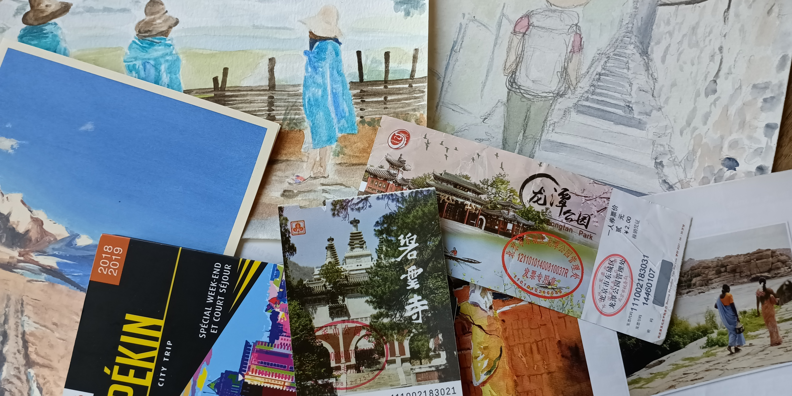
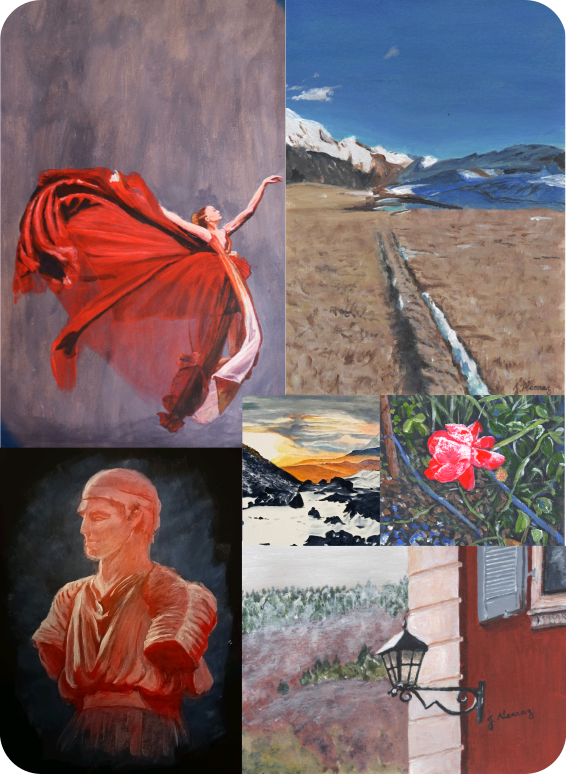
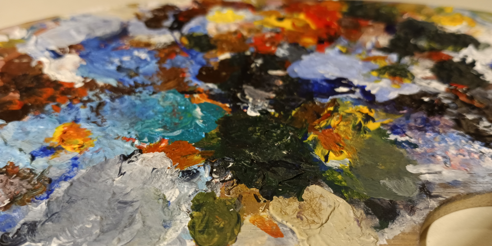
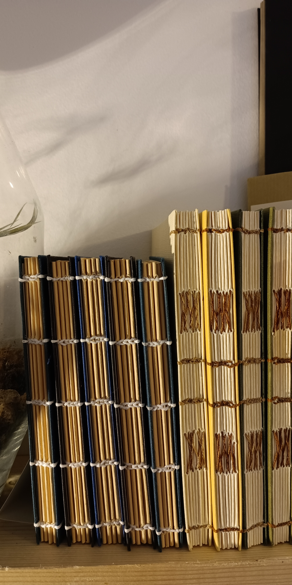

Cours hebdomadaires - Cambes
Carnet de voyage
Ce cours s'adresse à celles et ceux qui aiment ou qui souhaitent raconter des histoires. Vous aimez voyager et dessiner, peindre, lire, ou encore prendre des photos? Vous apprendrez à relier toutes ces passions sous forme d'un carnet de voyage. Vous êtes parti.e en voyage récemment, le téléphone plein de photos? Ou vous vous rêvez de voyager à l'autre bout du monde et d'en garder un souvenir impérissable? Je vous aide à mettre en forme votre projet de A à Z. Je vous donne des conseils techniques (dessin, peinture, narration, mise en forme, reliure) tout au long du projet. Il n'est pas nécessaire de partir à l'autre bout du monde, il est aussi tout à fait possible de raconter des aventures fictives. L'objectif est d'avoir à la fin de l'année un carnet de voyage unique, relié par vos soins et dont vous êtes fier.e.

Le lundi de 18h00 à 20h00, du 23 février au 3 juillet. Fermé pendant les vacances scolaires.
Salle Collasson, 33880 Cambes
10 € le premier cours - 160 € le semestre
Adulte
Peinture acrylique
Vous souhaitez apprendre à peindre, mais vous ne savez pas par quoi commencer? Vous êtes au bon endroit! Je vous apprends à faire vos mélanges de couleur et à peindre ce qui vous entoure de manière réaliste. Vous apprendrez à observer votre environnement, à cadrer votre sujet, à comprendre les ombres et les lumières.

Le mercredi de 15h00 à 17h00, du 23 février au 3 juillet. Fermé pendant les vacances scolaires.
Salle Collasson, 33880 Cambes
10 € le premier cours - 160 € le semestre
Ouvert à tous les âges
Ateliers de découverte - Langoiran
Peinture acrylique - Les couleurs
Vous souhaitez apprendre à peindre, mais vous ne savez pas par quoi commencer? Vous êtes au bon endroit! Cet atelier vous apprendra à jouer avec les couleurs. Vous allez apprendre à les assortir, à les mélanger pour en créer de nouvelles et à bien les choisir pour votre première peinture à l'acrylique!

Le 19 février 2026 de 18h00 à 20h00.
Brouhaha Café-Tricot, 33550 Langoiran
30 € l'atelier
Matériel fourni
Duos parent/enfant bienvenus!
Découverte de la reliure - la reliure copte
Venez découvrir une des techniques de fabrication d'un livre en fabriquant votre propre carnet!
La reliure copte sera à l'honneur, une reliure robuste et pratique.
Vous pourrez choisir tous les éléments de votre carnet parmi les matériaux apportés pour laisser
libre cours à votre créativité.
Si vous avez chez vous de jolis papiers et que vous souhaitez les transformer en carnet,
vous pouvez bien sûr les apporter!

Le 24 février 2026 de 18h00 à 20h00.
Brouhaha Café-Tricot, 33550 Langoiran
35 € l'atelier
Matériel fourni
Adulte